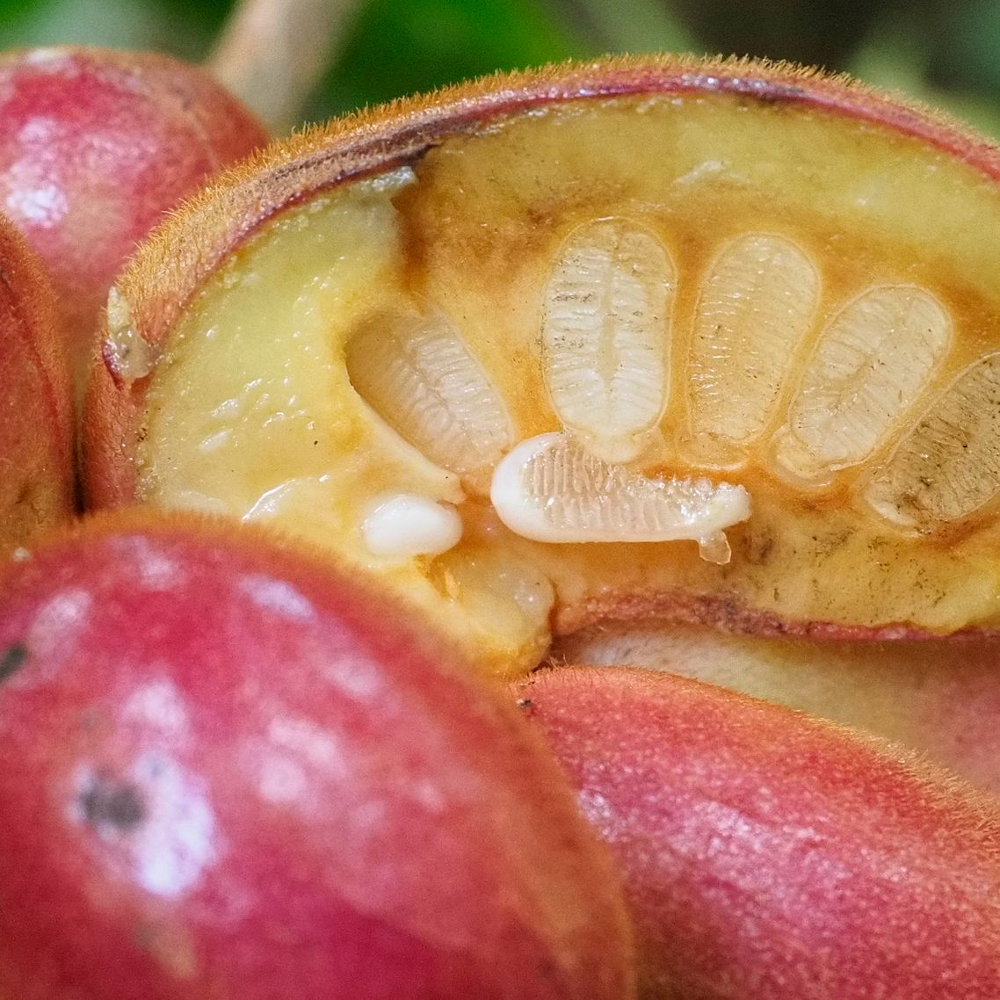
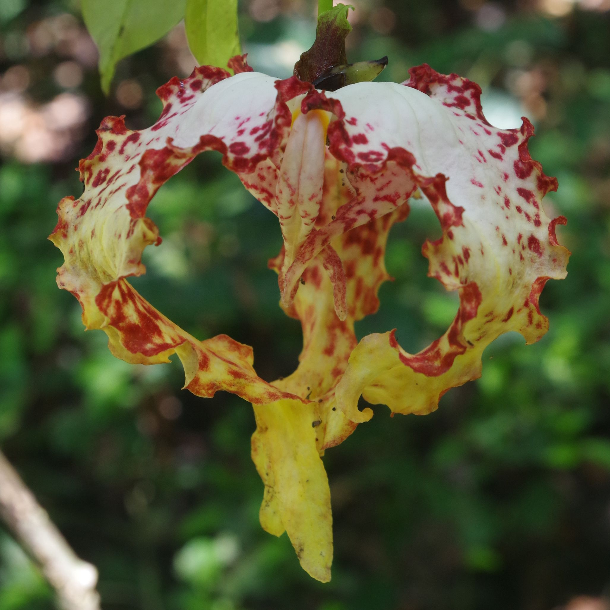
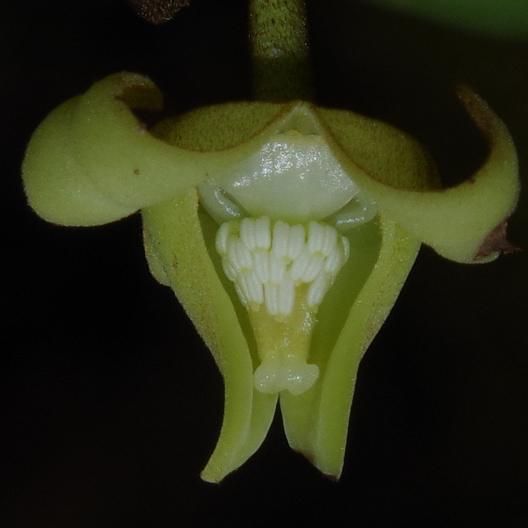

This project is funded by the European Research Council (ERC) Consolidator grant. It aims to unravel the diversification and conservation of tropical rain forests with a focus on the GLOBAL scale.
Start: October 2020
End: March 2026
Official abstract of the project: Tropical rain forests (TRF) are the most species rich yet highly threatened ecosystems on Earth. They play pivotal roles as global climate regulators and for human wellbeing. Their long term conservation is central for global climate mitigation and biodiversity conservation. Elucidating the evolutionary processes that underpin this immense diversity is critical for improved conservation actions. What evolutionary processes determine TRF diversity? How will human-induced species losses impact the evolutionary history of TRF? Time calibrated phylogenies retain the fingerprint of these patterns and are fundamental prerequisites to maximize the conservation of evolutionary history. However, global densely sampled robust phylogenies are lacking for TRF plants, significantly limiting our ability to properly address these questions. I will generate the largest most comprehensive datasets ever assembled for a major, ecologically important and species-rich pantropical model plant family: Annonaceae (~2500 species). First, I will test major hypotheses about TRF evolution at a global scale and what biotic and abiotic factors drove their diversification. Then, I will predict the impact of plant species extinction on the evolutionary history of TRF. Using the extensive network of European herbaria, I will reconstruct a robust time-calibrated complete species level phylogenomic tree of Annonaceae. I will compile massive morphological, chemical and geographical datasets for all species. Novel paleoclimatic data will be modelled through space at ten discrete periods over the last 100 million years. These data will then be integrated using innovative statistical macroevolutionary comparative approaches to answer the above questions at never achieved levels of precision. GLOBAL will provide improved predictions of TRF evolution informing conservation policies, and set the new standard for next generation evolutionary studies of TRF evolution applicable to other key tropical groups.



A short video on the GLOBAL PhD project of Paola Santacruz (IRD / PUCE) focusing on understanding herbivore interactions with Annonaceae, especially within Ecuador's rain forests.
This video was done in the Yasuni National Park of Ecuador, mainly with the 50 ha dynamic plot of the Pontificia Universidad Católica del Ecuador.